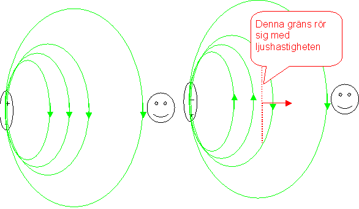
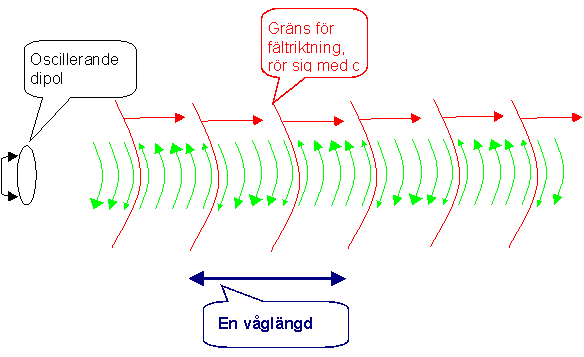
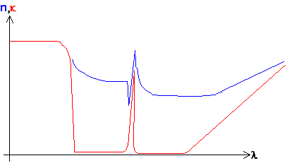
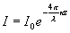

Kap 4 Vågoptik
Hittills har vi betraktat ljuset som strålar, utom i kapitlet om
diffraktion , där vi talade om vågegenskapen diffraktion utan att beröra vad sorts vågor ljuset är. Detta ska vi nu försöka bättra på.Ljuset som våg, transmission
Att ljuset är en våg är ett påstående som brukar vålla många missförstånd. Till att börja med finns det ingenting i vågen som rör sig i berg och dalbana. Det som händer är att vi har en elektrisk dipol som ger ett elektriskt fält som till vänster i fig. Där ligger dipolen still och
fältet är nedåtriktat vid observatören hela tiden.
Till höger har dipolen plötsligt bytt riktning. Den glade observatören borde då känna ett uppåtriktat fält i stället. Problemet är att han inte kan känna denna riktningändring omedebart ty då skulle han kunna överföra information från dipolen till sig själv med oändlig hastighet, och det förbjöd Einstein (eller rättare sagt, det är omöjligt enligt relativitetsteorin). Själva
ändringen i fältriktning, rör sig med ljushastigheten mot observatören. Om vi nu tänker oss en dipol som svänger riktigt snabbt fram och tillbaka, dvs en atom/molekyl som just håller på att avge ljus (assymmetrier i elektronbanorna gör att den beter sig som en oscillerande dipol just när elektronen håller på att ramla från en yttre nivå till en inre). Det bli då något i stil med nedanstående fig:
Vi har alltså växlingar i fältriktning som rör sig från källan med ljushastigheten. Tiden mellan två sådana växlingar är en halv period för den svängande dipolen. En hel period rör sig tydligen en sträcka av en våglängd,
l , på en period, T. Enlig den gamla mekanik-godingen "sträcka=tid x hastighet" blir då l =cT=c/f om f är frekvensen.Vad är det då som ser ut som en våg? Om man plottar E-fältet som funktion av läge blir det en sinusformig kurva, som rör sig med ljushastigheten. Men man får inte förväxla en plot med verkligheten. Det är alltså ett elektriskt fält som går i vågor, ingenting materiellt rör sig vågformigt.
När denna våg passerar ett medium som glas eller vatten, kan man se det som händer på två sätt. Bägge är liknelser, men beskriver verkligheten bättre för den kvantmekaniske amatören än vad den verkliga begreppsapparaten skulle göra. Glöm bara inte att det är en liknelse!
Det första sättet att se det är som fotoner som absorberas och emitteras såsom vi beskrev det i
kap 3 . Detta är ett bra sätt att beskriva emission och absorption, men mindre bra för att beskriva brytningsindex, och hur vågfronterna beter sig, så för att förstå det tittar vi i stället på dipolmodellen:En dipol ger inte bara ifrån sig ett elektriskt fält, den påverkas också själv av ett yttre fält. Om en dipol befinner sig i ett fält (från en ljusstråle) kommer den att försöka ställa in sig i fältets riktning. Om fältet växlar riktning med den frekvens som finns i exempelvis ljus, kommer den inte tillnärmelsevis att hinna med utan dipolen virerar bara svagt. Samtidigt påverkas emellertid också elektronskalen runt kärnan så att dessa förskjuts i förhållande till kärnan (som visserligen också är laddad men är mycket tyngre). Elektronmolnets svängande i förhållande till kärnan bildar då en oscillerande dipol som i sig sänder ut ljus (för det gör ju dipoler när de svänger). Man kan visa att det på detta sätt utsända ljus ligger efter ligger efter det ljus som orsakade dipolens svängning, i fas. (Om inte annat så för att verkan kommer efter orsak). Det fält som fortsätter efter passage av den atom som blivit en dipol är alltså summan av det yttre och det nyutsända, försenade. Nettoresultatet är en försening av vågen. Ju närmre en resonansfrekvens för dipolen (motsvarar absorptionsfrekvens för fotonen) man kommer ju häftigare blir dipolens svängning och ju större blir förseningen. Detta medför att man får en dispersionskurva som i t.ex i fig:

Där n är brytningsindex och
k är absorbtionskoeffiecient (bulk). Vi ser att ni närheten av absorptionsvåglängder kommer n att gå upp. Detta fenomen brukar kallas dispersion, och leder i allmännhet till att brytningsindex stiger med sjunkande våglängd. Det är detta som ger upphov till kromatisk aberration i linssystemk
används för att beräkna hur snabbt ljuset avtar i intensitet enligt
Egentligen ska
k användas enbart för att beteckna att ljus absorberas i de atomer/molekyler det passerar. Värdet varierar då från 3-4 för metaller (där ljuset alltså bara kan tränga in några hundra nm) över gråfilter (som i solglasögon tex) med 10-4, sjövatten (10-6 skogstjärn, 10-9 västkusten) till luft 10-13. Ofta bakar man emellertid in olika andra förlustmeknismer för ljuset som spridning mot partiklar, rayleighspridning och annat)Till
nästa sida (Interferens och optiska filter)Till
nästa kapitel (Modern optronik)Till
innehållsförteckningen